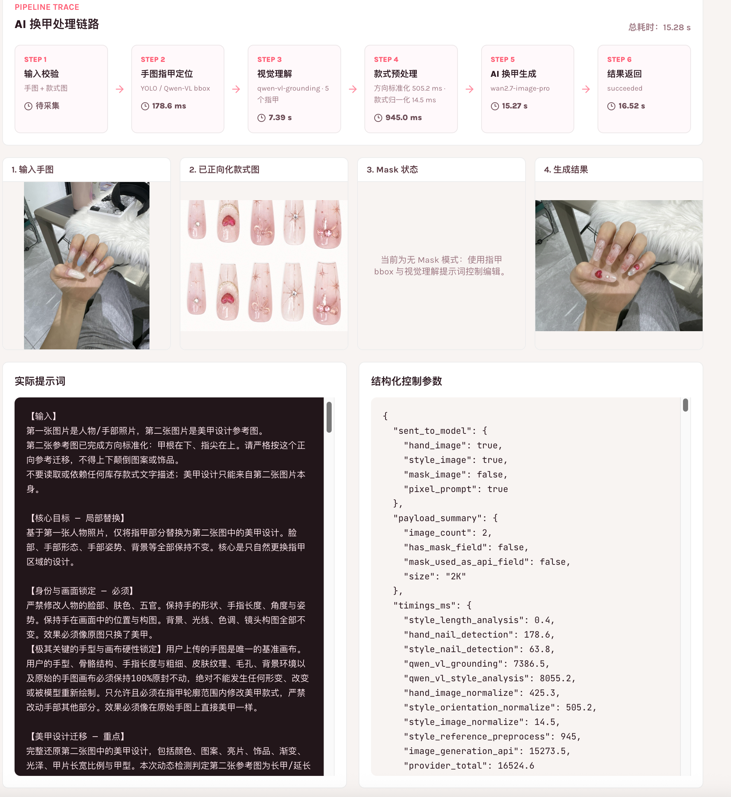
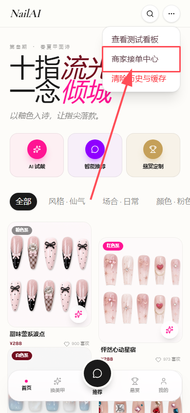
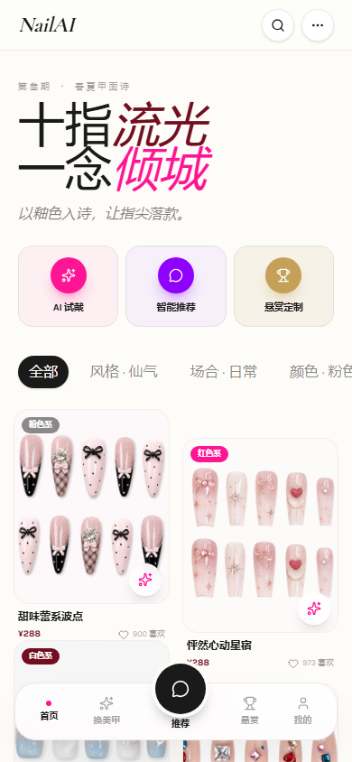

上传清晰手照
用户提供自己的手部照片，系统保留手型、肤色和拍摄环境作为试戴基础。
Closed Loop
NailAI 不是单点生图玩具，而是把消费者决策、商家供给和平台履约串成可展示、可推荐、可交易的数据链路。
用户提供自己的手部照片，系统保留手型、肤色和拍摄环境作为试戴基础。
款式图和六维标签一起进入请求，降低模型只靠文字猜测的跑偏风险。
FastAPI 图像管线接收 multipart 请求，返回真实 result_image_url。
结果页帮助用户判断“这款在我手上好不好看”，减少到店前的不确定。
用户进入款式详情、电子闺蜜推荐、门店推荐或 DIY 悬赏。
Why It Matters
美甲是强视觉、强个性化、强本地履约的服务。NailAI 的价值来自把内容、用户偏好、商家能力和真实服务连接起来。
看到真实上手效果，明确价格、门店能力和等待时间，在到店前完成更确定的消费决策。
把真实作品快速转成标准化上架图，补齐标签后进入供给池，降低上新、修图和接单成本。
沉淀可搜索、可推荐、可履约的美甲服务数据，提升从内容浏览到预约交易的转化。
Product Surface
用户上传手图并选择款式，系统把手图、款式图、style_id 和 style_payload 传给 FastAPI 生图服务，生成可用于消费决策的试戴结果。
用自然语言表达“通勤短甲”“婚礼伴娘”“显白显长”等需求，系统基于款式库和标签返回推荐理由。
用户上传灵感图，填写预算、场景和风格，平台把来图复刻需求转成可报价的结构化需求单。
商家上传真实作品图，AI 生成标准化设计预览，补齐六维标签后上架到首页款式库。
试戴结果继续连接附近门店、报价、排期、设施和商家可做能力，让内容种草走向本地履约。
Architecture
浏览器默认走 Next.js 同源代理 /api/v1，服务端通过 AI_SERVICE_URL 转发到 FastAPI，避免手机访问时 localhost 指向本机的问题。
image、style_image、style_id、style_payload 同时进入 multipart 请求，保证模型拿到视觉参考和语义约束。
/store/styles/preview 负责生成设计预览，/store/styles/publish 负责发布结构化款式，失败态不伪装成最终图。
MVP 使用本地 seed、静态资源和 FastAPI demo 数据，Supabase schema 为后续真实持久化预留。
AI Advantages
核心是把用户手图、款式参考图和结构化款式信息一起输入，做受约束的图像编辑，更容易保留真实手型、姿态和肤色。
图片提供视觉参考，标签提供语义边界，让推荐、搜索、试戴和商家上架共用同一套可解释数据。
商家预览失败就展示失败态，不把兜底图包装成真实 AI 结果，方便 demo 和真实产品排查问题。
图像生成能力封装在 provider adapter 中，后续可以按速度、画质、成本和可用性切换模型。
Meituan Fit
NailAI 可以出现在美甲频道、点评款式内容页、门店详情页、商家后台和 DIY 报价系统中，把视觉内容变成可履约服务。
Business & Metrics
这个 MVP 的商业想象不是卖一张图，而是建立美甲行业的款式知识库、视觉搜索、个性化推荐和门店能力匹配。
关注用户是否愿意上传手图、是否从试戴结果继续进入详情或门店。
衡量单款上架耗时、标签完整率、新款式曝光和商家接单响应。
关注搜索命中、DIY 悬赏成交、门店服务能力覆盖和预约咨询转化。
证明 demo 闭环可用，收集评委和真实用户反馈。
为 5 到 10 家门店批量生成标准款式图，验证上新效率。
用 AI 试戴结果保存和分享，推动从好玩到真的想做。
接入真实门店库存、评价、报价和 DIY 悬赏成交机制。
Source Notes



Demo Script
cd web
npm run dev
# http://localhost:3003cd ai-service
./.venv/bin/uvicorn app.main:app --host 0.0.0.0 --port 8008
# GET /health